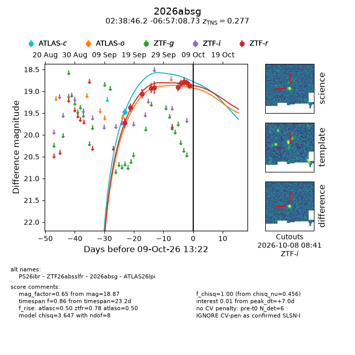
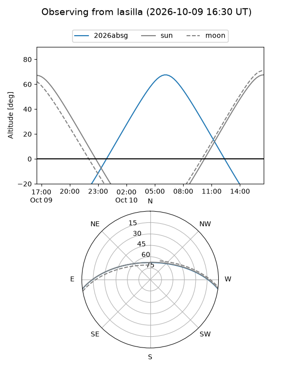
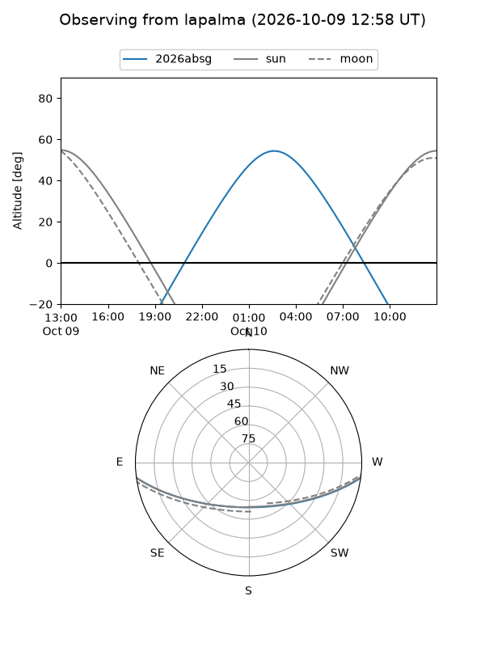
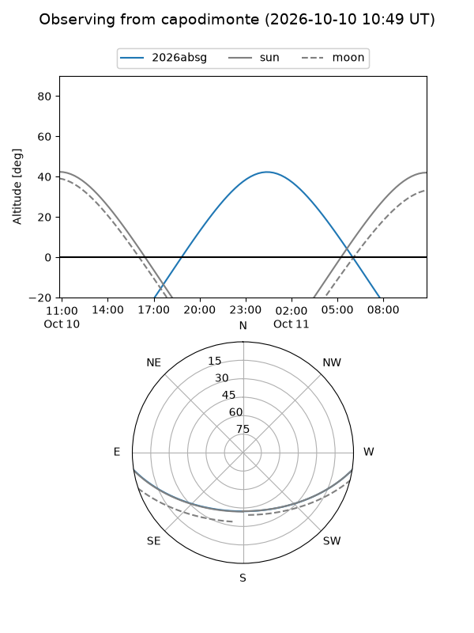
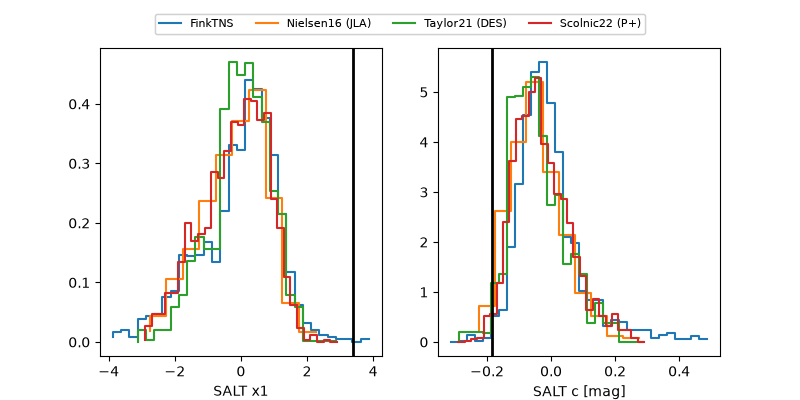

2026absg
Target 2026absg at 2026-10-09 13:25
Aliases and brokers:
FINK-ZTF: ztf.fink-portal.org/ZTF26absslfr
Lasair-ZTF: lasair-ztf.lsst.ac.uk/objects/ZTF26absslfr
ALeRCE-ZTF: alerce.online/object/ZTF26absslfr
YSE-PZ: ziggy.ucolick.org/yse/transient_detail/2026absg
TNS name: wis-tns.org/object/2026absg
Direct TNS query: direct search
alt names
ZTF26absslfr (ztf,fink_ztf)
2026absg (tns,yse)
ATLAS26lpi (atlas)
PS26ibr (panstarrs)
Coordinates:
equatorial (ra, dec) = 39.6923,-6.95243
equatorial (HMS+DMS) = 02:38:46.16,-06:57:08.73
galactic (l, b) = (179.4680,-57.51324)
Flags:
TNS type: SLSN-I
TNS redshift: 0.2770
peak dt: +7.0
Photometry:
last atlasc=19.47, atlaso=18.86, ztfr=18.87
1 atlasc, 1 atlaso, 10 ztfr detections
Lightcurve

Visibility



Additional plots
